Nothing here is downloaded yet. This is a shortlist, not a queue: pick the ones you want and I will fetch, measure, plate and slice them — usually inside a day, with a real time and gram figure before anything prints.
How to read the badges: VERIFIED means I fetched the page and read it. INDEX means the model is listed in the live search index but Printables blocks my fetcher, so I have not read the page myself.
Dragons, mechanical things, fidgets. The stuff a teenage boy actually carries around.
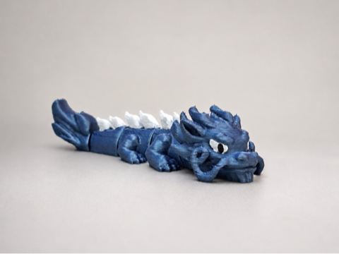
The best of the print-in-place dragons on Thingiverse right now — long body, clean joints, no supports, no assembly.
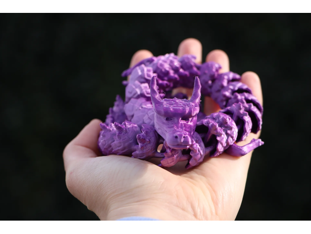
Chunkier, more toy-like than the Chinese dragon and a much faster print. A good first articulated dragon.
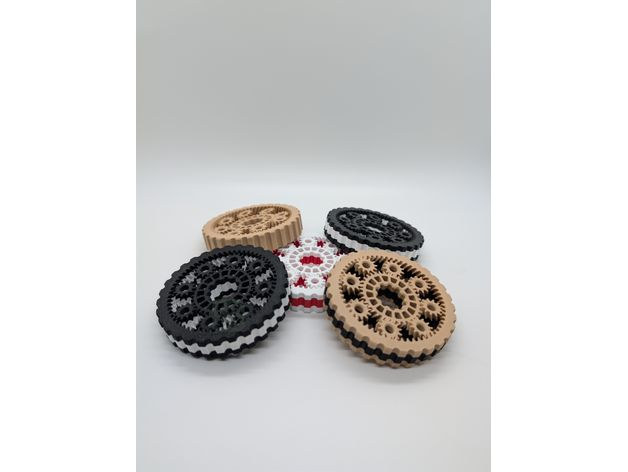
Eight herringbone planet gears in one piece, spins straight off the bed. The most satisfying desk object in this list.
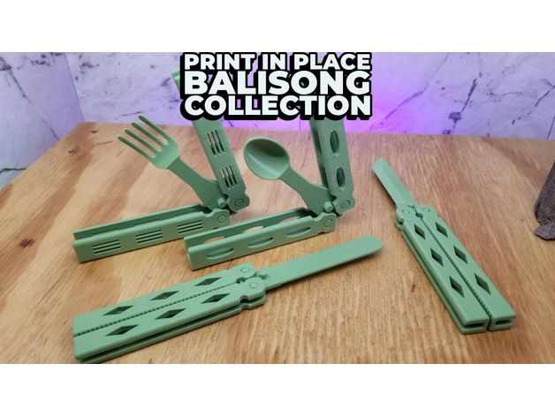
Butterfly knife and cutlery that print assembled. Silly, clever, and genuinely fun to flip.
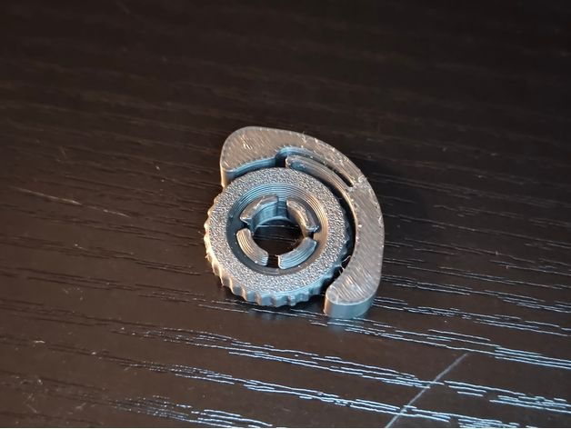
A tiny 40-minute click in your pocket. Ratchet action, no hardware, no supports.
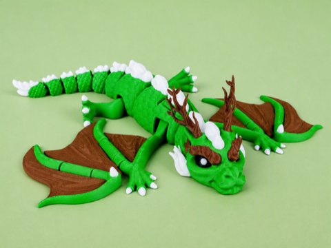
If we want a showpiece dragon rather than a toy: posed, detailed, and the most-downloaded dragon family on Printables.
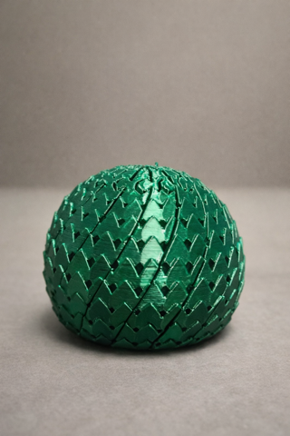
Expands and collapses like a scale ball. Different to every other fidget we own.
Animals, banks and things that live on a desk. Cute over clever.
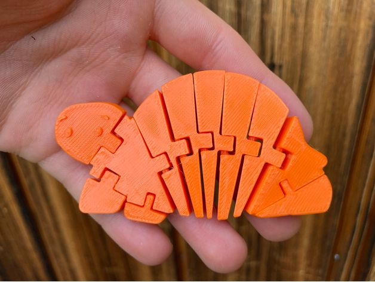
The cleanest flexi turtle around — smooth joints, prints in about an hour, survives being carried in a school bag.
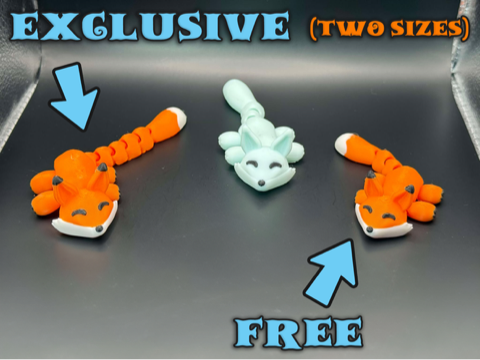
Two tail lengths, small enough to print four at once. This is the one she will actually keep.
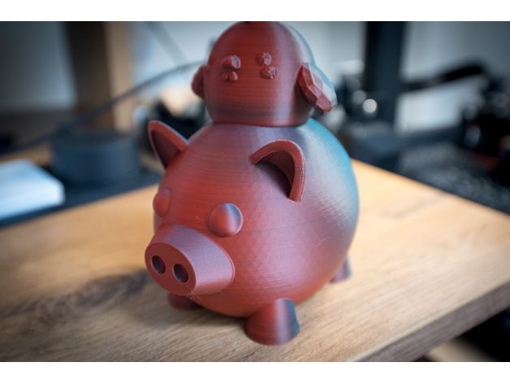
A proper money box with a chick on top, and unlike most banks the coin slot does not need supports.
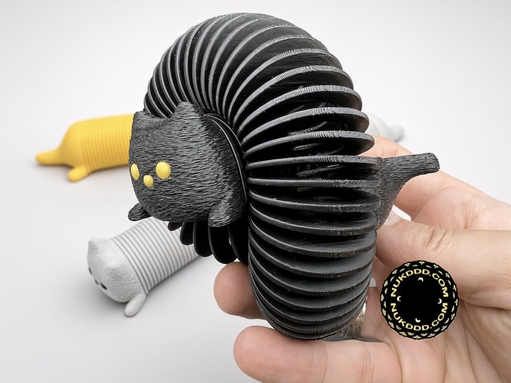
Seventy-six reviews and it is exactly as daft as it looks. Needs a Bambu account to download, but it prints on any machine.
Absurd, tiny, articulated. The sort of thing that gets handed round the classroom.
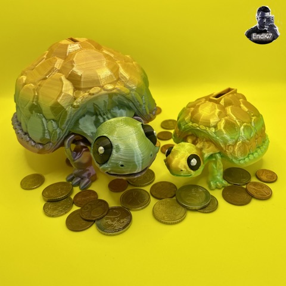
Flexi shell that opens — both a toy and a bank.
Vases and planters. Everything here is single-wall or near it, so it is fast and uses little filament.
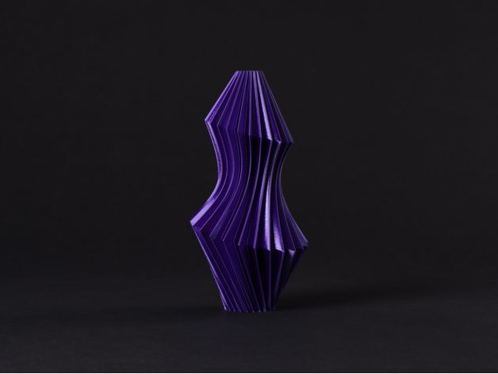
Genuinely good looking, prints in vase mode in a couple of hours, and does not look printed.
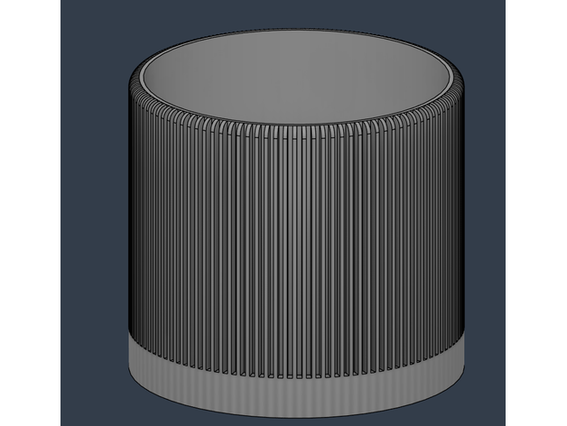
Ribbed cylinder pot with a matching drip tray. The most 'bought it in a shop' thing in this list.
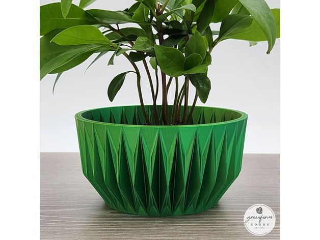
Folded-paper geometry with a catch tray. Sharp, architectural, and cheap in filament.
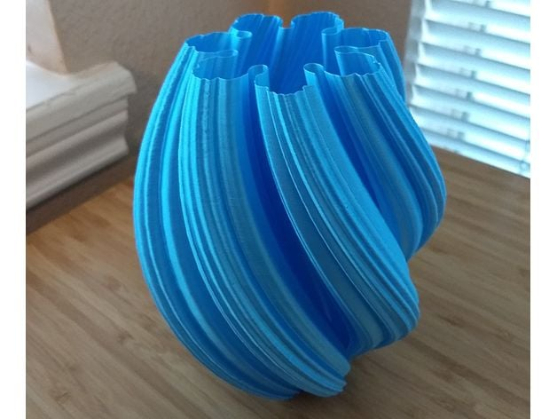
The classic fractal twist — the surface changes as it rises. Prints in vase mode.
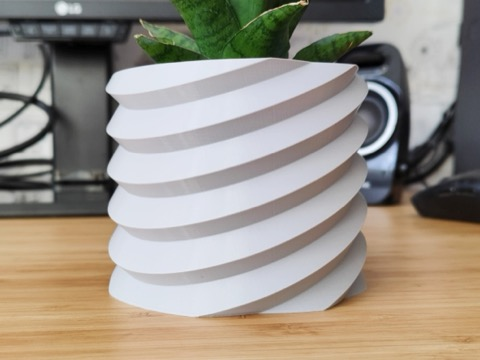
The cleanest modern planter on Printables and it is designed for vase mode from the start.
The unglamorous things that make the printer earn its place.
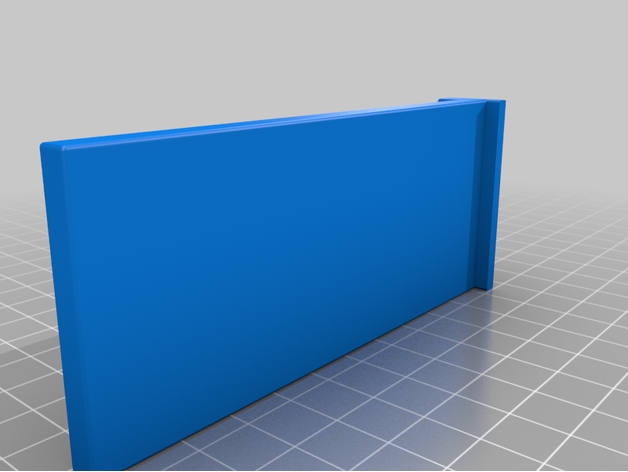
Modular trays that clip together — the one desk organiser people actually keep using.
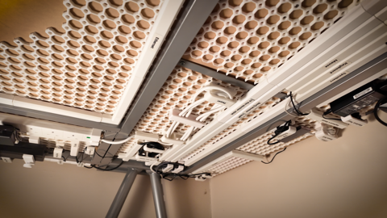
Under-desk cable trays. Ugly problem, tidy answer, prints in a couple of hours.
The last list was four years of leftovers: a piggy bank, a unicorn and three vases, all chosen because they were easy to pack onto a plate. This one is chosen model by model for whether it is worth the plastic — print-in-place mechanisms, things with a satisfying click, planters that do not look printed. Every entry states what it needs to print, so nothing surprises us on the bed.